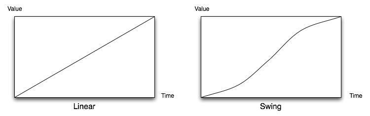
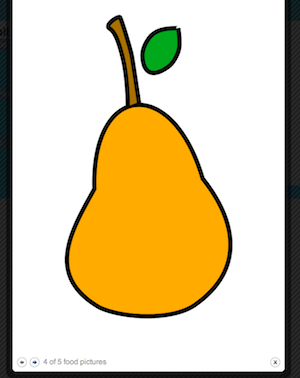
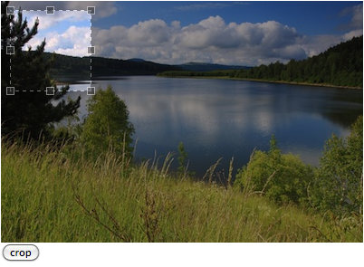

Jquery Tutorial : Plugins
- A plugin is a piece of code that adds more functionality to a software or a library.
- jQuery provides you the ability to use plugins (so you do not re-invent the wheel) and it also provides you the ability to write your own.
In this chapter, we are going to discuss how to:
- Use some of the popular Plugins available
- Create a plugin for code reuse purposes
Many times, you might consider adding more functionality to your applications, such as:
- Slideshows
- New animations
- Form validation & autocompletion
- Table enhancement (fixed headers, pagination, row editing and such)
- Etc…
Most of the time these functionalities have already been implemented by other developers in the form of a plugin.
There is no need to reinvent the wheel.
![[Note]](../images/note.png)
Note Of course there are tons of plugins available out there on the web and obviously we cannot cover all of them.
When we discussed effects and animations, we talked about easing which control the value of a CSS property over a certain time.
- Acceleration & deceleration effect
- Bouncing effect
- Linear effect
- And many others
jQuery has only two easing functions built-in:
linearandswing(swingis the default easing function which is used if no other is specified).If you need more choice for easing functions you can use the easing plugin available at this location: http://plugins.jquery.com/project/Easing
Note This plugin is also included in the jQuery UI project that we are going to discuss later
To start using the easing plugin, download and include the JavaScript file in the HTML page:
<script type="text/javascript" src="jquery.easing.1.3.js"></script>
Now, you will have access to more easing options. For instance:
$(document).ready(function() { $('.menu-li1').toggle(function() { $(this).next('.menu-ul1').slideDown('slow','easeOutBounce'); // },
function() {
$(this).next('.menu-ul1').slideUp('slow','easeOutBounce'); //
},
function() {
$(this).next('.menu-ul1').slideUp('slow','easeOutBounce'); //  });
});
});
}); This will give a bouncy effect when sliding up or sliding down the side menu
Note Of course, there are other easing functions available like
easeInCirc,easeInOutExpo,easeOutBack,easeOutElastic,easeOutBounce,easeInOutElastic, etc…
- There are tons of plugins related to slideshow to facilitate image gallery creation.
Of those plugins, we are going to discuss these two:
- The ColorBox plugin (for lightbox purposes)
- The Cycle plugin (to provide sliding of elements inside a container using special transitions)
There is a well known plugin for slideshows: ThickBox
- Very good plugin but it is no longer maintained.
ColorBox is a serious challenger to ThickBox:
- Appearance of the rendered lightbox is defined in external CSS
- Light footprint: only 9Kb
- MIT licensed
To start using ColorBox:
Download the archive from the website ⇒ http://colorpowered.com/colorbox/?url=colorbox. It contains:
- Two versions of the plugin: a non-minified and a minified version of the library
- Several examples and each of them contains a stylesheet along with several images that can serve as a basis for your own design (here we are just going to copy paste what we need)
Include the library in your HTML file:
<script type="text/javascript" src="jquery.colorbox-min.js"></script>
Let us say you have a list of links like this one:
<ul> <li><a rel="foodpic" href="images/bday_cake.png">Birthday Cake</a></li> <li><a rel="foodpic" href="images/corn.png">Corn</a></li> <li><a rel="foodpic" href="images/egg.png">Egg</a></li> <li><a rel="foodpic" href="images/pear.png">Pear</a></li> <li><a rel="foodpic" href="images/thanksgiving.png">Thanksgiving Dessert</a></li> </ul>
You can quickly start to use the ColorBox plugin like this:
$('a[rel="foodpic"]').colorbox();Of course, there are a lot of options you can specify when calling the
.colorbox()method by passing it a JavaScript object containing those options. These options can be found at http://colorpowered.com/colorbox/?url=colorbox$('a[rel="foodpic"]').colorbox({ transition: 'fade',
speed: 500,
current: "{current} of {total} food pictures"  });
}); Effect to apply when changing picture Speed of the transition in milliseconds Text formatting that provides information to the user about the current picture number and the total number of pictures left This produces the following result:

- The Cycle plugin is a plugin that can be used in conjunction with slideshow implementations to provide different types of transition effects.
-
The method
.cycle()provided by the plugin applies on a container element so each direct child of this same container becomes a "slide." - To start using the cycle plugin, download the archive at the following address ⇒ http://malsup.com/jquery/cycle/download.html
This archive contains three minified versions of the library:
-
jquery.cycle.min.js: basic version library containing only a slide transition -
jquery.cycle.all.min.js: full featured version containing a lot of transitions (This is the one we are going to show here) jquery.cycle.lite.min.js: stripped down version containing only the most the basic optionsNote If you need to see the source code of the library, there is also a
srcfolder included in the archive
-
Include the plugin in your HTML file:
<script type="text/javascript" src="jquery.cycle.all.min.js"></script>
Here is an example of some HTML code:
<div id="photos"> <img src="images/bday_cake.png"/> <img src="images/corn.png"/> <img src="images/egg.png"/> <img src="images/pear.png"/> <img src="images/thanksgiving.png"/> </div>
To quickly use the cycle plugin, you could do the following:
$(document).ready(function() { $('#photos').cycle({ //
fx: 'fade'
});
}); The .cycle()method is called on a container element and is passed a JavaScript object containing multiple properties for our slideshow. In this case we just specify the effect to use (other effects can be seen here: http://malsup.com/jquery/cycle/browser.html)Of course, there is a list of options we can use to more precisely control the transition effects for the
.cycle()method (http://malsup.com/jquery/cycle/options.html)$('#photos').cycle({ fx: 'scrollDown',
speedIn: 2500,
speedOut: 500,
timeout: 0,  next: '#photos'
next: '#photos'  });
}); This is the effect to use Speed for the in transition in milliseconds (when the current slide gets in) Speed for the out transition in milliseconds (when the current slide gets out) Milliseconds between slide transition Element to use as event trigger for next slide This would look like this:
Another popular plugin related to images is the Jcrop plugin which allows the user to crop your images.
Note Of course, the Jcrop plugin does not crop your image, the manipulation will still happen on the server-side. Jcrop just provides the user an intuitive way to define the bounding edges of the image
- This kind of feature is often used to crop a profile picture image.
- To start using Jcrop, download it at the following URL: http://deepliquid.com/content/Jcrop_Download.html
The downloaded archive contains:
- The JavaScript file containing the plugin
- A CSS file for the plugin
- An animated GIF that the plugin uses as a background
Include the plugin in your HTML file:
<script type="text/javascript" src="jquery.Jcrop.js"></script>
Copy/paste the CSS file along with the animated GIF in your project then include the CSS file in your HTML file
<link rel="stylesheet" type="text/css" href="jquery.Jcrop.css"/>
We will use the following HTML code as an example:
<div id="cropsection"> <img id="mofat" src="images/lake.jpg" alt="Lake on a sunny day"/>
<input type="button" value="crop"/>
</div> Image where we will apply the Jcrop plugin This button will give us the detail of the selection This is how you apply the plugin to the image in the JavaScript part:
$(window).load(function() { var $image_to_crop=$('#cropsection > img').eq(0); var jcrop = $.Jcrop($image_to_crop,{ //
setSelect: [10,10,100,100], //
minSize:[50,50] //
});
}); Calling $.Jcrop()will return a Jcrop object so that we can later access its properties and methods to get the selected coordinates. This method has two arguments, the first one being the image on which we apply the plugin and the second one being the options for the plugin passed as a JavaScript object Options passed to the plugin. The detail of these options can be found here: http://deepliquid.com/content/Jcrop_Manual.html#Setting_Options This will render the following:
So far, if we click on the button nothing happens. We want to display the current selection as soon as the user clicks on this button
$('#cropsection :button').click(function() { var selection = jcrop.tellSelect(); alert('selected size: ' + selection.w + 'x' + selection.h); alert('selected at coordinates: (' + selection.x + ',' + selection.y + ')'); });
- Form validation is very hard to do using simple JavaScript.
Data like email addresses and urls are generally validated against regular expressions.
- Hard to write
- Hard to test
The Validation plugin:
- Was started in 2006
Written and maintained by Jörn Zaefferer
- Member of the jQuery team
- Lead developer on the jQuery UI team
- To start using the Validation plugin, go to http://bassistance.de/jquery-plugins/jquery-plugin-validation/
Include the library in your HTML:
<script type="text/javascript" src="http://ajax.microsoft.com/ajax/jquery.validate/1.7/jquery.validate.js"></script>
In this case we let Microsoft host the plugin for us but you could also download it and host it along with your web site Here is an example of an HTML form:
$(document).ready(function() { $('#signup form').validate({ //
rules: {
name: {
required: true
},
email: {
required: true,
email: true
},
url: {
url: true
},
password: {
required: true,
minlength: 6
},
passconf: {
equalTo: "#password"
}
},
success: function(label) {
label.text('OK!').css('color','green');
}
});
}); The .validate()method is applied to a form. We need to provide an object to this method containing validation rules and handlers such as thesuccesshandler that will add a label element next to each input as soon as they are valid. Complete documentation for this plugin can be found here: http://docs.jquery.com/Plugins/Validation
- Using only jQuery, we have seen that you have the ability to do a lot with a selection.
Regarding tables, you could imagine the following functionalities:
- Fixed tables headers
- Repeated table headers
- Pagination
- Inline editing
- Sort by columns
- All of this of course would take time to implement and this is not easy at all.
- As you might guess, someone might already have done this before: the DataTable plugin (http://www.datatables.net/index).
The DataTable plugin:
- Your HTML tables become fully functional data grids (pagination, column sorting, searching, ajax loading, etc)
- Free and open source
- Fully internationalisable
- Supports jQuery UI ThemeRoller (will be discussed in jQuery UI)
- Tested through 1400+ unit tests
- Encapsulate your code for reuse purposes
- Public distribution
- Maintain chainability
- Public distribution
- Prevent namespace clashing
- Plugins in jQuery are easy to write!
Plugin creation follows three main steps:
- The method you create is passed a DOM selection (a jQuery object)
- The method performs some DOM manipulation, event binding, etc…
- The method returns the original selection (a jQuery object) so it maintains chainability
- To start creating a plugin you would add your method to the jQuery prototype.
The jQuery prototype is accessed with
$.fnorjQuery.fn:$.fn.pluginName = function(options) { //Implement your plugin here }-
However, this is poor design. The
$syntax could conflict with other JavaScript libraries you might be using. You could use a self-invoking anonymous function like this (recommended design for avoiding conflicts):
(function($){ $.fn.pluginName = function() { //Implement your plugin here }; })(jQuery);-
Inside the function your selection (jQuery object on which you called the plugin) is accessible using the
thiskeyword. There is no need to wrap it like this$(this)since it is already a jQuery object. -
Once the plugin is done, you would save it into a JavaScript file (generally
jquery.pluginname.js) and include it in your HTML file along with the jQuery library. Finally to use your plugin you would do
$('selection').pluginName();
As we have seen, there are two structures for creating a plugin.
The first one (not recommended at all):
$.fn.pluginName = function(options) { //Implement your plugin here }And the second one (avoid conflicts when using other libraries ⇒ always use this one):
(function($){ $.fn.pluginName = function() { //Implement your plugin here }; })(jQuery);
-
Do not wrap
thisin the immediate scope of the plugin’s method sincethisrefers to the jQuery object on which we call the plugin. -
For chainability purposes, it is highly recommended to return the jQuery object (
this) on which we call the plugin. - In case you need to pass the plugin some settings, consider using objects over a list of arguments.
- Only use a method for your plugin in order to avoid cluttering the namespace.
| Note |
|---|---|
With so many plugins out there, you should analyze the plugins you are considering using as if you were writing them with the previously mentioned best practices in mind. |